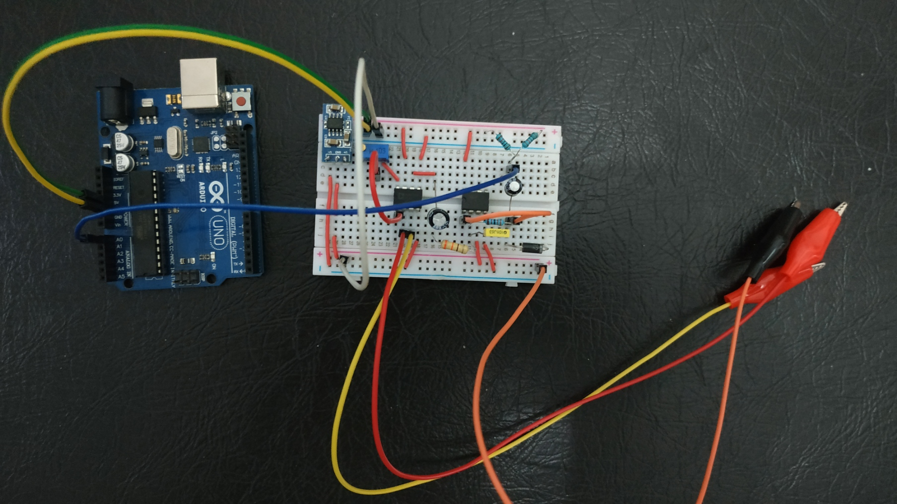
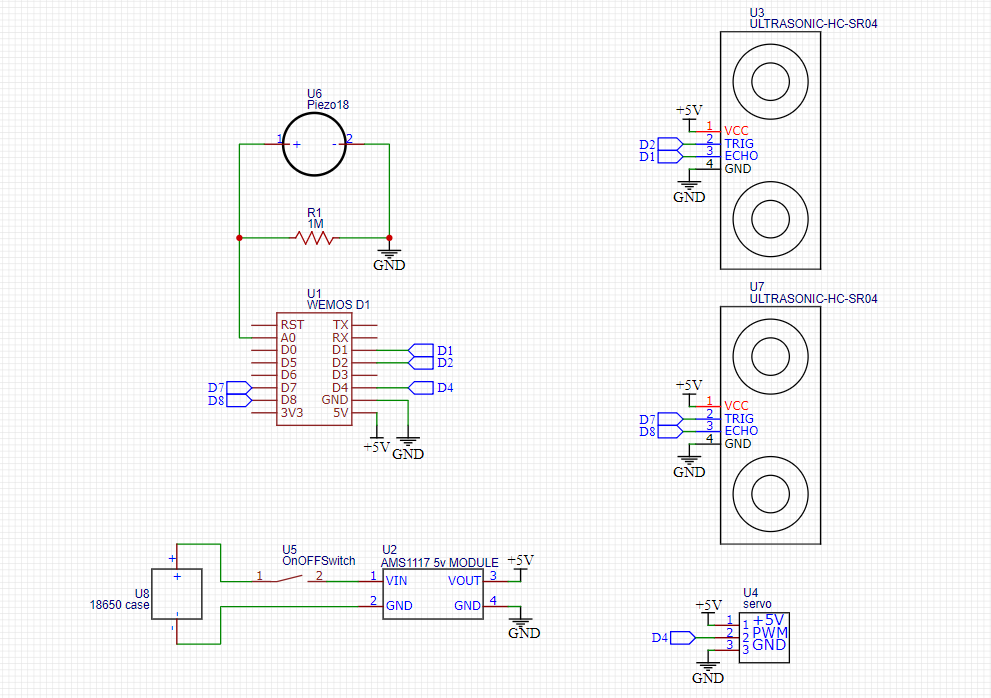

Project
Persoal Fun Project
Sometimes I try to make something in my spare time. Sometimes useful things and sometimes useless things. Although sometimes the things I make are not perfect but this can add to my experience of trial and error
I try making an EMG-ECG module for a microcontroller like Arduino or ESP. The module consists of instrument amplifier using AD620 IC and some basic bandpass filters with an inverting amplifier using Op-amp IC. After some adjustment in the gain, the module can detect muscle movement in the forearm flexor muscle and heartbeat, with only 3 connections to the microcontroller (2 for the supply and 1 for the output). Then the output of the signal I try to used it as a signal to move robotic hand. GitHub
A tool for measuring a person's bioimpedance, using a microcontroller as a signal processor and reader for measurement results, and displaying them. The tool made consists of a signal generator which uses a Wien bridge oscillator circuit and AD9833 Module to produce a sine signal, then VCCS to convert the voltage input into a current source so that it is safe when it enters the body, then the signal read using an instrument amplifier as an amplifier for easy reading, and converted into a DC signal to be read by the microcontroller. The results of the tool can read the impedance value both on the resistor and on the human body. GitHub
Using a previous project, the bioimpedance of a human hand can be used to estimate the angle at the human elbow, which can be used to move a robotic hand GitHub
Making Electrical Impedance Tomography (EIT) using a Microcontroller, namely ESP32-S2 with MicroPython. This tool consists of a microcontroller which functions to control the electrode output, regulate the signal frequency, and obtain data. Then the data will be processed using the Python program with the PyEIT library to reconstruct the resulting data into a 2D image. This EIT can be used on several types of electrodes with a maximum of 16 electrodes. GitHub


I'm making virtual mouse and keyboard using camera as the input. The camera detect the location of my hand and map it with the width and height of the monitor then move the cursor to certain location, work the same with the keyboard. I'm satisfied with the result, although it's not perfect, and still open to further development. GitHub
In this project I created an IoT trash can that can automatically open when there is a hand in front of the trash can, or when there is a knock/push. So users don't need to touch the trash can, thereby reducing the possibility of spreading germs or disease through the trash can. This trash can also has a sensor to find out whether the contents of the trash can are full or not, and can be seen via the blink application because this trash can is also connected to the internet. GitHub
a camera that can follow a person's facial position automatically. This tool uses a webcam camera as video input, which will then be read by a Python program using the OpenCV and Mediapipe libraries to detect the position of the face and send the face position to the Arduino which is then used to move the servo motor to move the webcam camera to the position of the target face. GitHub
same like the previous project, but the output of this device is not to move a camera but from the face coordinate it can be used to move an eye animation, so it can always look at the subject. Uisng the 0.96" OLED to displat the image. GitHub
Create a Conway's Game of Life application using the Python program with the PyGame library, where users can adjust the size of the game area and the starting location of the game. GitHub